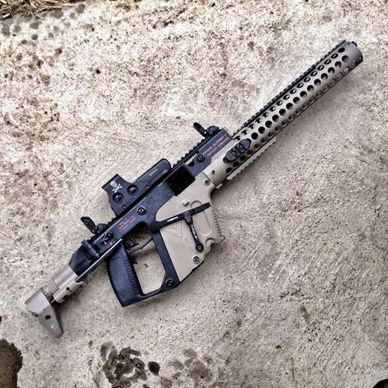
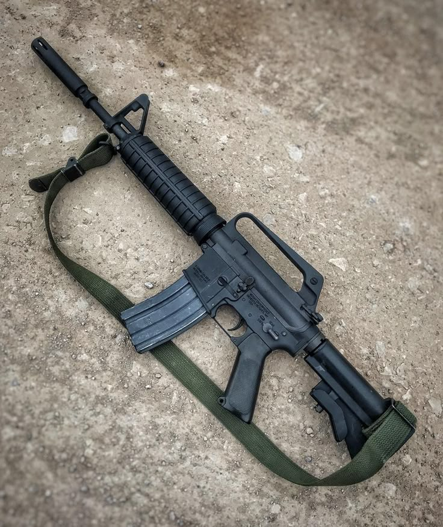
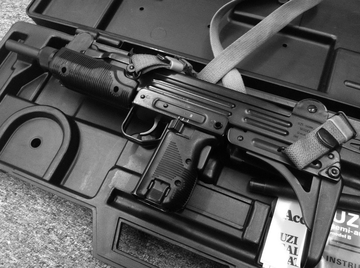

M416
Deskripsi
Sebagai salah satu senapan serbu terbaik, M416 menggunakan sistem gas yang memungkinkan tembakan yang lebih stabil dan dapat diandalkan dalam berbagai kondisi medan. Senjata ini juga menawarkan mode tembak yang fleksibel, memberikan pengguna kemampuan untuk menembak dalam mode semi-otomatis maupun otomatis, menyesuaikan dengan kebutuhan pertempuran.
Dengan kualitas konstruksi yang sangat baik, M416 mampu bertahan dalam lingkungan yang ekstrem dan menawarkan daya tahan yang luar biasa. Selain itu, kemampuannya untuk dipersonalisasi dengan berbagai aksesoris, mulai dari optik, grip, hingga popor, menjadikan M416 pilihan utama bagi pasukan elit dan penggemar senjata di seluruh dunia.
Spesifikasi
- Tipe Senjata: Senapan Serbu
- Kaliber: 5.56×45mm NATO
- Panjang Total: 840 mm (dengan popor dilipat)
- Panjang Laras: 368 mm
- Berat (tanpa amunisi): 3,29 kg
- Magasin: 30 butir (bisa dipasang magasin berkapasitas lebih besar)
- Sistem Operasi: Gas-operated, rotating bolt
- Sistem Pengaman: Safety selector switch (untuk mengatur mode tembak)
- Bahan: Konstruksi baja, aluminium, dan polimer tahan lama
- Jangkauan Efektif: 600 meter
- Aksesoris: Dapat dipasangi berbagai aksesoris seperti optik, grip depan, dan popor yang dapat disesuaikan
Info Pengiriman
Pengiriman ke seluruh Indonesia melalui JNE, TIKI, dan Pos Indonesia. Estimasi waktu pengiriman 2-7 hari kerja tergantung lokasi.

KRISS Vector
Deskripsi
Vector adalah sub-machine gun dengan desain futuristik yang revolusioner. Menggunakan sistem Super V yang unik, senjata ini secara drastis mengurangi recoil dan muzzle climb, memungkinkan kontrol yang luar biasa saat menembak secara otomatis.
Dengan rate of fire yang tinggi dan ukuran yang kompak, Vector menjadi pilihan ideal untuk operasi jarak dekat dan pertempuran di ruang terbatas. Desain ergonomisnya memungkinkan penggunaan yang nyaman dalam waktu lama, sementara rail mounting system yang terintegrasi memudahkan penambahan berbagai aksesori sesuai kebutuhan misi.
Spesifikasi
- Tipe Senjata: Sub-machine Gun
- Kaliber: .45 ACP
- Panjang Total: 610 mm (dengan popor diperpanjang)
- Panjang Laras: 140 mm
- Berat (tanpa amunisi): 2,7 kg
- Magasin: 25 butir (tersedia juga magasin 13, 30, atau 40 butir)
- Sistem Operasi: Delayed blowback, KRISS Super V
- Sistem Pengaman: Ambidextrous safety selector
- Bahan: Polimer kekuatan tinggi dan komponen baja presisi
- Jangkauan Efektif: 100 meter
- Aksesoris: Rail Picatinny atas dan bawah, mount aksesori samping
Info Pengiriman
Pengiriman ke seluruh Indonesia melalui JNE, TIKI, dan Pos Indonesia. Estimasi waktu pengiriman 2-7 hari kerja tergantung lokasi.

M249 LMG
Deskripsi
M249 Light Machine Gun (LMG) adalah senjata penindas yang tangguh dengan kemampuan menembak berkelanjutan untuk memberikan daya api yang superior. Dirancang untuk memberikan dukungan api dalam skala squad, M249 memiliki sistem feeding yang fleksibel, dapat menggunakan baik belt amunisi maupun magazine standar.
Dengan laras yang dapat diganti dengan cepat, M249 mampu mempertahankan fire rate yang tinggi tanpa overheating, menjadikannya pilihan utama untuk operasi yang membutuhkan volume tembakan yang besar. Bipod yang terpasang meningkatkan stabilitas saat menembak dari posisi stasioner, sementara desainnya masih memungkinkan mobilitas yang cukup untuk manuver taktis.
Spesifikasi
- Tipe Senjata: Light Machine Gun
- Kaliber: 5.56×45mm NATO
- Panjang Total: 1040 mm
- Panjang Laras: 465 mm
- Berat (tanpa amunisi): 7,5 kg
- Sistem Feeding: Disintegrating belt 200 rounds atau magazine STANAG 30 rounds
- Sistem Operasi: Gas-operated, open bolt
- Rate of Fire: 750-1000 rounds per minute
- Bahan: Steel receiver, polimer grip, aluminum heat shield
- Jangkauan Efektif: 800 meter pada titik target, 3600 meter jangkauan maksimum
- Aksesoris: Integrated bipod, rail Picatinny untuk mounting optik dan aksesori
Info Pengiriman
Pengiriman ke seluruh Indonesia melalui JNE, TIKI, dan Pos Indonesia. Estimasi waktu pengiriman 2-7 hari kerja tergantung lokasi.

Desert Eagle
Deskripsi
Desert Eagle adalah pistol semi-otomatis ikonik dengan daya hentikan yang luar biasa. Berbeda dengan kebanyakan pistol yang menggunakan sistem recoil atau blowback, Desert Eagle menggunakan sistem gas yang biasanya ditemukan pada rifle, memberikan kemampuan untuk menembakkan kaliber yang jauh lebih besar.
Dengan frame dari stainless steel atau aluminum alloy dan slide dari baja solid, Desert Eagle memberikan kombinasi kekuatan luar biasa dan estetika yang mengesankan. Senjata ini bukan hanya alat taktis, tetapi juga simbol prestise di kalangan kolektor dan penembak jitu dengan presisi tinggi pada jarak yang lebih jauh dibandingkan pistol konvensional.
Spesifikasi
- Tipe Senjata: Pistol Semi-Otomatis
- Kaliber: .50 Action Express
- Panjang Total: 270 mm
- Panjang Laras: 152 mm
- Berat (tanpa amunisi): 2,08 kg
- Magasin: 7 butir
- Sistem Operasi: Gas-operated, rotating bolt
- Sistem Pengaman: Manual safety lever dan transfer bar
- Bahan: Stainless steel frame, steel slide dengan berbagai opsi finishing
- Jangkauan Efektif: 200 meter
- Aksesoris: Picatinny rail untuk mounting aksesori, opsi custom grips
Info Pengiriman
Pengiriman ke seluruh Indonesia melalui JNE, TIKI, dan Pos Indonesia. Estimasi waktu pengiriman 2-7 hari kerja tergantung lokasi.

M16A4
Deskripsi
M16A4 adalah versi modern dari senapan serbu M16 legendaris yang telah melayani militer AS selama lebih dari lima dekade. Dengan laras panjang yang memberikan akurasi unggul, M16A4 memungkinkan pengguna untuk mengengam target dengan tepat pada jarak jauh.
Fitur utama M16A4 adalah rail mounting system Picatinny yang terintegrasi, memungkinkan pemasangan berbagai aksesori taktis seperti optik, grip, dan penunjuk laser. Sistem gas direct impingement yang telah disempurnakan memberikan keandalan yang lebih baik dibandingkan versi sebelumnya, menjadikannya pilihan andal untuk berbagai situasi pertempuran.
Spesifikasi
- Tipe Senjata: Senapan Serbu
- Kaliber: 5.56×45mm NATO
- Panjang Total: 1000 mm
- Panjang Laras: 508 mm (20 inch)
- Berat (tanpa amunisi): 3,4 kg
- Magasin: 30 butir STANAG
- Sistem Operasi: Direct impingement gas system
- Mode Tembak: Semi-otomatis dan 3-round burst
- Bahan: Receiver aluminium 7075-T6, laras baja krom-lined
- Jangkauan Efektif: 800 meter
- Aksesoris: Rail interface system (RIS) untuk mounting aksesori, carry handle yang dapat dilepas
Info Pengiriman
Pengiriman ke seluruh Indonesia melalui JNE, TIKI, dan Pos Indonesia. Estimasi waktu pengiriman 2-7 hari kerja tergantung lokasi.

Uzi
Deskripsi
Uzi adalah sub-machine gun ikonik yang telah menjadi standar industri sejak diperkenalkan pada tahun 1950-an. Dengan desain kompak dan sederhana, Uzi menawarkan portabilitas maksimal tanpa mengorbankan daya api, membuatnya ideal untuk operasi di ruang sempit dan situasi yang membutuhkan kemampuan quick-draw.
Fitur keselamatan Uzi termasuk grip safety yang memastikan senjata hanya dapat ditembakkan saat digenggam dengan benar, dan sistem bolt yang menembak dari posisi tertutup untuk akurasi yang lebih baik. Konstruksi terutama dari pressed steel membuat Uzi murah untuk diproduksi namun tetap sangat tahan lama dan andal di berbagai kondisi lingkungan.
Spesifikasi
- Tipe Senjata: Sub-machine Gun
- Kaliber: 9×19mm Parabellum
- Panjang Total: 650 mm (dengan popor diperpanjang), 470 mm (dengan popor dilipat)
- Panjang Laras: 260 mm
- Berat (tanpa amunisi): 3,5 kg
- Magasin: 32 butir (tersedia juga magasin 20, 25, dan 40 butir)
- Sistem Operasi: Blowback, open bolt
- Rate of Fire: 600 rounds per minute
- Bahan: Pressed steel dan polimer
- Jangkauan Efektif: 200 meter
- Aksesoris: Popor yang dapat dilipat, bayonet lug (pada beberapa model)
Info Pengiriman
Pengiriman ke seluruh Indonesia melalui JNE, TIKI, dan Pos Indonesia. Estimasi waktu pengiriman 2-7 hari kerja tergantung lokasi.
Sejarah
M416 merupakan varian dari senapan M16, yang pertama kali dikembangkan pada tahun 1950-an oleh Eugene Stoner dan tim di Fairchild Armalite Corporation. M16 adalah senapan serbu yang menggunakan kaliber 5.56×45mm NATO dan menjadi senjata utama bagi militer Amerika Serikat sejak Perang Vietnam.
Namun, meskipun M16 sangat sukses, ada beberapa masalah dengan senjata ini yang menyebabkan kebutuhan untuk pengembangan lebih lanjut. Beberapa masalah yang muncul termasuk ketidakmampuan sistem gas dalam kondisi lingkungan yang ekstrem, serta masalah pada presisi dan daya tahan senapan.
Pada 1990-an, setelah diterimanya berbagai masukan dan pengalaman di lapangan, senapan M16 mengalami serangkaian perbaikan dan peningkatan desain. Salah satu hasil dari pengembangan ini adalah M4 Carbine, yang menjadi senapan utama bagi Angkatan Darat Amerika Serikat dan NATO. M4 adalah versi yang lebih kompak dan lebih mudah dikendalikan dari M16, dengan desain yang lebih fleksibel untuk digunakan dalam berbagai medan tempur.